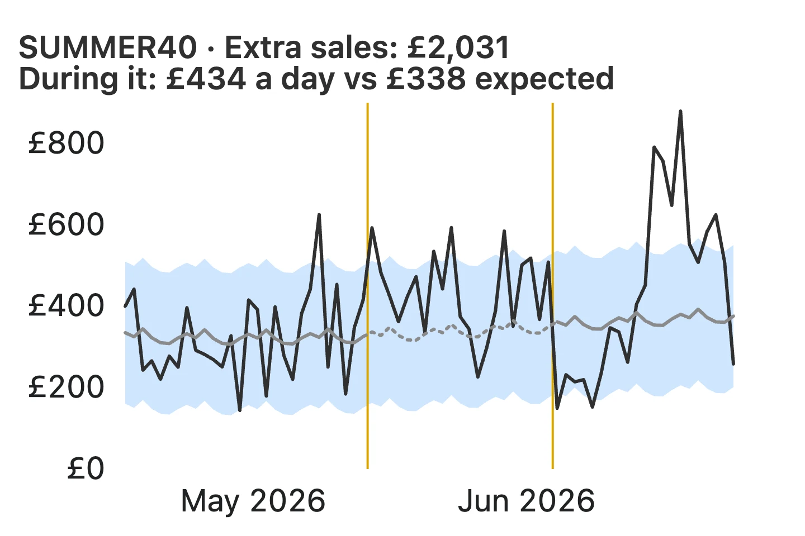

Shopify Sidekick vs Stats Compass: can Sidekick tell if a promotion made money?
Tested on 19 October 2026, on a demo store with known answers.
The short answer
- Asked plainly whether a discount made money, Sidekick, Shopify's built-in assistant, judged each promotion on its own orders and called both of our test promotions "promising", including one that lost money.
- When we asked it to compare with what the store would normally have made, Sidekick gave a careful before-and-after answer that landed within about £17 of ours.
- Stats Compass compares every promotion with what would have happened anyway, adjusted for the season, and says whether it made money, with a range. It doesn't need the question phrased the right way, and it checks again every week.
- Stats Compass doesn't generate its numbers. The same question on the same data always gives the same answer, and you can see how each one was worked out.
Same question, same answer
Stats Compass doesn't generate its numbers: they come from fixed statistical methods, so the same question on the same data always gives the same answer, and you can see how each one was worked out. Every figure in the app opens "How this was calculated": its definition, the version of that definition, and how many orders it was computed from.
You can also use Stats Compass through an AI assistant. The assistant then writes the sentences and chooses what to ask for, but each figure Stats Compass's tools return is worked out the same way every time.
What we tested
We asked Sidekick and Stats Compass the same five questions on a Shopify development store with generated orders, so the right answers are known. It holds 4,181 orders from April 2025 to October 2026 and two discount promotions:
- SUMMER40: 40% off, 14 May to 3 June 2026, 310 orders. It brought more sales but lost money: the discount cost more margin than the extra sales earned.
- FLASH20: 20% off, 15 to 21 June 2026, 100 orders.
We asked Sidekick in the Shopify admin and only asked questions; we didn't let it take any action. The Stats Compass answers are from its analysis of the same store.
Question by question
| Question | Sidekick | Stats Compass |
|---|---|---|
| "Did my SUMMER40 promotion make money?" | Sidekick: £9,243.30 after discounts, leaving £3,217.04 "before missing costs and operating expenses". "It looks promising at the product-margin level, but it's not yet confirmed net profit." No comparison with a normal period. | Stats Compass: Lost money. Contribution margin −£1,377 (−39%), a real change. It needed 2.11 times the usual revenue to break even, and got 1.29 times. |
| "Compared with what I'd normally have made without the promotion, how much did SUMMER40 cost me in margin?" Our wording added the comparison. | Sidekick: "Your store made £1,360.59 less in recorded gross profit… a 40.2% drop", against the 21 days before. It added that this is "not proof that SUMMER40 alone caused the shortfall". | Stats Compass: £1,377 less (−39%), against what the same weeks would have brought, adjusted for the season. |
| "What would SUMMER40 have needed to break even?" | Sidekick: "About 67% more sales". By its own figures, that's about 2.3 times its normal revenue, against about 1.4 times it got. | Stats Compass: 2.11 times the revenue it would otherwise have had, against 1.29 times it got. |
| "What's the biggest discount SUMMER40 could have offered and still broken even, given the extra sales it actually brought?" | Sidekick: "About 31% off is the estimated ceiling", assuming every sale used the code. | Stats Compass: About 24% averaged across all of the promotion's sales, against the 34% it actually gave away: roughly 28% off as a code. Both say 40% was too deep. |
| "Did my FLASH20 promotion make money?" | Sidekick: £1,720.94 left after recorded costs. "It looks promising, but I wouldn't call it confirmed profit… it doesn't tell us how many sales would have happened without the promotion." | Stats Compass: Made money. Revenue +82% and margin +£731 (+57%), both real changes. It needed 1.16 times the usual revenue, and got 1.82 times. |
Can Shopify Sidekick tell me whether a discount made money?
It can work out what a promotion's orders brought in after discounts and recorded costs, and it is careful to say what it doesn't know. Asked plainly, it didn't compare the promotion with what the store would have sold anyway, and it said so: "it doesn't tell us how many sales would have happened without the promotion." So it called both promotions "promising", though one lost money. When we asked for the comparison, it made a sensible one.
How does Stats Compass decide whether a discount made money?
It estimates what the store would have sold without the promotion, from the weeks before it and the same time of year, and measures the promotion against that. Each result has a range and a verdict: expected, real change, noise, or not enough data yet. It also works out how much more revenue the promotion needed to break even, the largest discount the extra sales could afford, and how many new customers it brought.

Do they agree?
When the question includes the comparison, closely. On SUMMER40's lost margin, Sidekick said £1,361 less against the 21 days before, and Stats Compass £1,377 less against a season-adjusted expectation. On break-even, both counted the discount once. The difference is in what each does when the comparison isn't in the question.
When should I use Sidekick, and when Stats Compass?
- Sidekick: questions about your store and tasks in your Shopify admin. If you ask it to compare a promotion with a normal period, it will.
- Stats Compass: whether a promotion made money compared with what would have happened anyway, whether this week's numbers are normal for the time of year, and a weekly verdict without having to ask.
They work side by side. Stats Compass only reads your store, so it doesn't replace Sidekick.
How fair was this test?
- Generated data. The orders were generated so the answers are known.
- One leading question. We added the comparison to the second question's wording. The third and fourth followed it in the same conversation, so Sidekick may have carried that comparison forward.
- Each question was asked once. Stats Compass's answers aren't generated: they come from fixed, versioned calculations, so the same question on the same data gives the same answer every time, and every figure can be traced to how it was worked out. Sidekick's answers are generated, so, like any generated answer, they can differ from one asking to the next.
- Both products change. This is how they answered on 19 October 2026.
Stats Compass Commerce is free during early access.
Stats Compass is an independent app, not made or endorsed by Shopify. Shopify and Sidekick are trademarks of Shopify Inc.
← Back to Home